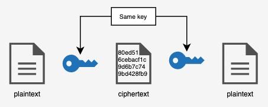
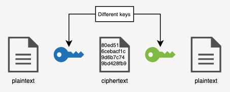

Introduction
We browse the Web through the HyperText Transfer Protocol (HTTP). But most websites nowadays will use HTTPS instead. The additional 'S' stands for 'Secure', and as the name suggests, it is a more secure variant of HTTP, using cryptography to keep the information secure from hackers.
Encryption
In the early days of the Web, the webpages (HTML files) were sent across the web unencrypted. However, this posed a security threat, as anyone with access to the packets could see the data inside of them. To prevent this, HTTPS was developed. HTTPS uses a system called SSL (short for Secure Sockets Layer), which is a system that encrypts data while it is being transferred.
How it works
When data is transferred, the sender encrypts the plaintext (original, readable data) into ciphertext (encrypted data). The encryption method used here is an asymmetric cipher.
To understand symmetric/asymmetric ciphers, you can think of it as a treasure chest.
In a symmetric cipher, there is one key used to encrypt and decrypt the information; the same key used to lock the chest is used to unlock it. However, this causes issues when encrypting over the internet as every chest will be unlockable with a single key. The server can't use a different key for each chest either, as it would have to then send the key to the client which itself will require secure transmission ;-; (recursion go brrrr).
In an asymmetric cipher, however, there are 2 keys to a single chest; one is used to lock (encrypt) it, and the other is used to unlock (decrypt) it. While the concept may be unusual at first, it makes more sense for the security we want: the client can get the data it wants securely.
In such a system, each user will have two keys: a public and private key. The public key, as the name suggests, will be shared for everyone else, and the private key will be kept secret. The public key will asymmetrically encode data such that it will be decoded by the private key. When the server sends its packets, it will encode the packet with the receiver's public key, and the client will be able to decode it with its private key.
That is SSL/TSA in a nutshell. If you are interested in how the encryption works in detail, google 'RSA encryption' (warning: math) to find out more.